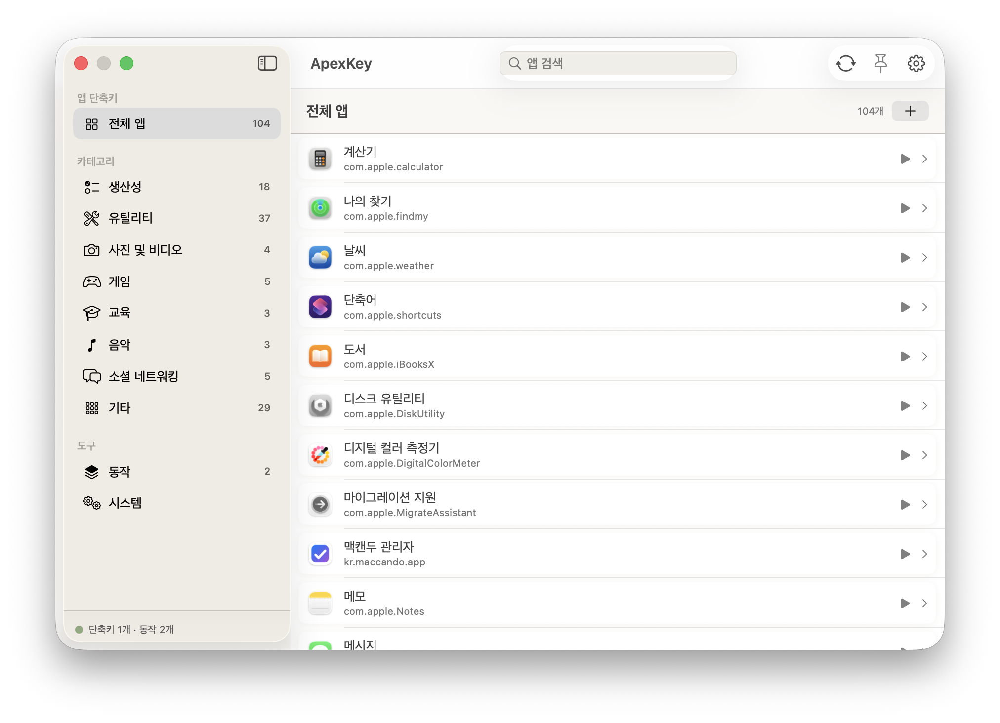

메뉴 명령 단축키
실행 중인 앱의 메뉴를 열거해 어떤 명령에도 전역 핫키를 지정 — 어디서든 실행하세요.

모든 앱은 메뉴를 노출합니다. ApexKey는 그것을 손끝에 올려놓습니다.
ApexKey를 실행하고 앱을 고르면 메뉴 트리를 읽어 옵니다 — 모든 명령과 하위 메뉴를.
원하는 명령의 + 버튼을 누르고 키를 입력하세요. ApexKey가 전역으로 녹음합니다.
어떤 앱에서든 그 단축키를 누르면 메뉴 명령이 즉시 실행됩니다 — 클릭도 검색도 없이.
12개 카테고리, 152개 액션, 마우스 불필요.
실행 중인 앱의 메뉴를 열거해 어떤 명령에도 전역 핫키를 지정 — 어디서든 실행하세요.
단계를 조합해 하나의 동작으로 — 앱 열기, 키 입력, 스크립트, 붙여넣기, 대기, 클릭, 반복.
If / 반복 / 메뉴 선택, 변수와 단계 간 출력-변수 연결까지.
모델 사용, 라이팅 툴, 이미지 생성 — 모두 핫키 하나에 바인딩할 수 있습니다.
현재 앱의 모든 단축키를 전체화면 또는 플로팅 오버레이로 한눈에 확인.
터미널 그린부터 페이퍼 화이트까지 — 라이트, 다크, 네온, 노드, 페이퍼, 터미널, 오사우루스.
macOS 14(Sonoma) 이상 · Apple Silicon & Intel
Homebrew(brew install borasarang/tap/apexkey) 배포는 준비 중입니다.
# 소스에서 빌드
brew install xcodegen
xcodegen generate --spec project.yml
./build_and_run.sh debug macos